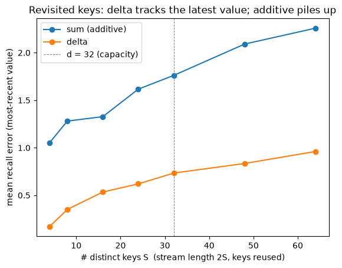

The question: how does a memory edit an association instead of piling onto it?
Fourth module of the foundations spine.
M3 ended on a wall: linear attention’s memory only ever adds (\(\mathbf{S}_t=\mathbf{S}_{t-1}+\mathbf{v}_t\phi(\mathbf{k}_t)^\top\)), so writing twice to the same key returns the sum of both values, and recall is lossy under load (M3 §6). M4 fixes the write rule: before storing, read what’s already there for this key and write only the difference. That single change turns a pile-on memory into one that can edit associations.
The fix is not new. It is the delta rule, which Bernard Widrow and Marcian Hoff published in 1960 (Adaptive Switching Circuits, IRE WESCON Convention Record, pp. 96–104) as the learning rule for Adaline — adjust the weights by the error between what you wanted and what you got. It predates backpropagation, deep learning, and Transformers by decades; what M4 does is recognize that a sequence model’s memory has exactly the problem Widrow and Hoff’s adaptive circuit had, and reach for the same answer. A linear Transformer with this write is a DeltaNet.
Objective
After this module you should be able to:
Show concretely why the additive write cannot update an association: it accumulates, returning \(\mathbf{v}_1+\mathbf{v}_2\) when you meant to overwrite \(\mathbf{v}_1\) with \(\mathbf{v}_2\).
Write the delta rule: read \(\bar{\mathbf{v}}=\mathcal{M}\phi(\mathbf{k})\), then write \(\beta(\mathbf{v}-\bar{\mathbf{v}})\phi(\mathbf{k})^\top\) — write the new, remove the old (FWP Eqs. 20–24).
Recognize the delta write as one step of gradient descent on the regression loss \(\tfrac12\lVert\mathcal{M}\phi(\mathbf{k})-\mathbf{v}\rVert^2\) — the “objective dial” from M2: swap the dot-product objective (→ Hebbian) for an \(L_2\) one (→ delta).
Read the update in matrix form\(\mathcal{M}(I-\beta\mathbf{k}\mathbf{k}^\top)+\beta\mathbf{v}\mathbf{k}^\top\) and see that \((I-\beta\mathbf{k}\mathbf{k}^\top)\)erases only along \(\mathbf{k}\) — a targeted edit.
Explain why the delta rule wins in the overcapacity / revisited-key regime (FWP’s setting-2 experiment), and where \(\beta\) (a learned, dynamic write strength) comes from.
Why it exists (the limitation it fixes)
M3’s memory is purely additive. Two problems, one root:
It can’t overwrite. Store \((\mathbf{k},\mathbf{v}_1)\), later store \((\mathbf{k},\mathbf{v}_2)\), the additive rule gives \(\mathcal{M}=\mathbf{v}_1\mathbf{k}^\top+\mathbf{v}_2\mathbf{k}^\top\), so a query returns \(\mathbf{v}_1+\mathbf{v}_2\). There is no way to replace a value; the memory only ever grows.
It saturates. A fixed \(d\times d\) matrix holds about \(d\) near-orthogonal associations (M2’s capacity law). Past that — the overcapacity regime — new writes interfere with old ones and recall degrades (M3 §6).
The FWP paper frames the fix precisely (§4.2): once in overcapacity, “an ideal memory model should dynamically interact with the memory contents and selectively determine which associations to remember or to forget … the purely additive update rule may be sub-optimal.” The answer is to make the write error-correcting: look at what the memory currently returns for this key, and only write the part it’s getting wrong. That is the delta rule, and it’s the first write rule in this course that can edit rather than only append: the real fix to the crosstalk wall we’ve now hit in M1, M2, and M3.
Core idea: read before you write
Linear attention writes blindly: \(\mathcal{M}_t=\mathcal{M}_{t-1}+\mathbf{v}_t\phi(\mathbf{k}_t)^\top\). The delta rule inserts one step first: read the memory at this key, then write the correction (FWP Eqs. 20, 24; \(\bar{\mathbf{v}}\) is what’s currently stored, \(\beta\) a write strength):
Carrying Widrow and Hoff’s 1960 rule into a fast-weight memory is FWP’s move (Schlag, Irie & Schmidhuber, 2021, §4.2), and the paper is explicit that it is borrowing: it introduces “an improved programming instruction akin to the famous error-correcting delta-rule,” citing Widrow & Hoff for the rule itself. It derives it as write-the-new, remove-the-old (Eq. 23): \(\mathcal{M}_t=\mathcal{M}_{t-1}\underbrace{+\,\mathbf{v}^{\text{new}}_t\phi(\mathbf{k}_t)^\top}_{\text{write}}\underbrace{-\,\bar{\mathbf{v}}_t\phi(\mathbf{k}_t)^\top}_{\text{remove}}\), which collapses to the boxed form. Three ways to read it, all the same equation:
Error correction (Widrow–Hoff): write only the residual \(\mathbf{v}_t-\bar{\mathbf{v}}_t\) between what you want and what’s stored. If the key is already correct, \(\bar{\mathbf{v}}_t=\mathbf{v}_t\) and nothing is written.
Gradient step: the residual is the gradient of \(\tfrac12\lVert\mathcal{M}\phi(\mathbf{k})-\mathbf{v}\rVert^2\), so one delta write = one SGD step with learning rate \(\beta_t\) (§3 below).
Erase-then-write: in matrix form \(\mathcal{M}_t=\mathcal{M}_{t-1}(I-\beta_t\phi(\mathbf{k}_t)\phi(\mathbf{k}_t)^\top)+\beta_t\mathbf{v}_t\phi(\mathbf{k}_t)^\top\) — a targeted rank-1 erase along \(\mathbf{k}_t\), then a write (§4 below).
\(\beta_t=\sigma(W_\beta\mathbf{x}_t)\) is a learned, per-token write strength (FWP Eq. 21), the learning rate of that SGD step. A linear Transformer with this write is what FWP names a Delta Network (DeltaNet).
Reading
FWP: §4.2 (Eqs. 20–24, the delta instruction; Eq. 23, write-the-new/remove-the-old), §6.1.2 (the setting-2 revisited-key experiment), App. A.1 (the derivation). The grounding source.
Store value \(\mathbf{v}_1\) at key \(\mathbf{k}\), then later store \(\mathbf{v}_2\) at the same key with the additive (M3) rule. With \(\mathbf{k}\) unit-norm, a query returns \(\mathcal{M}\mathbf{k}=\mathbf{v}_1+\mathbf{v}_2\) — the sum of everything ever written there, not the latest value.
import torchimport torch.nn.functional as Fimport matplotlib.pyplot as plttorch.manual_seed(0)d =16k = F.normalize(torch.randn(d), dim=0)v1, v2 = torch.randn(d), torch.randn(d)def sum_write(M, k, v, beta=1.0):return M + beta * torch.outer(v, k) # additive Hebbian write (M1 / M3)M = torch.zeros(d, d)M = sum_write(M, k, v1) # store (k -> v1)M = sum_write(M, k, v2) # same key, new value v2recall = M @ k # k is unit-norm -> v1 + v2print(f"want v2: additive recall error vs v2 = {(recall - v2).norm()/v2.norm():.3f}")print(f" additive recall error vs (v1+v2) = {(recall - (v1+v2)).norm()/(v1+v2).norm():.3f}")print("additive memory cannot overwrite: it returns v1+v2, the SUM of all writes at k.")
want v2: additive recall error vs v2 = 1.235
additive recall error vs (v1+v2) = 0.000
additive memory cannot overwrite: it returns v1+v2, the SUM of all writes at k.
2. The delta rule: read \(\bar{\mathbf{v}}\), write the correction
Before writing, query the memory at \(\mathbf{k}\) to get \(\bar{\mathbf{v}}=\mathcal{M}\mathbf{k}\), the stale value, and write only \(\mathbf{v}-\bar{\mathbf{v}}\). On the second write the memory already holds \(\mathbf{v}_1\), so \(\bar{\mathbf{v}}=\mathbf{v}_1\) and we write \(\mathbf{v}_2-\mathbf{v}_1\): the key now stores exactly \(\mathbf{v}_2\). The same repeated-key test that broke the additive rule is now clean.
def delta_write(M, k, v, beta=1.0): v_bar = M @ k # READ the current value at this key (FWP Eq. 20)return M + beta * torch.outer(v - v_bar, k) # write only the CORRECTION (FWP Eq. 24)M = torch.zeros(d, d)M = delta_write(M, k, v1) # v_bar = 0 -> writes v1M = delta_write(M, k, v2) # v_bar = v1 -> writes (v2 - v1)recall = M @ kprint(f"want v2: delta recall error vs v2 = {(recall - v2).norm()/v2.norm():.3f}")print("read-before-write: subtract the stale value, add the new one -> the key is UPDATED, not piled onto.")print("if the key is already correct, v_bar == v and the write is zero -- nothing is disturbed.")
want v2: delta recall error vs v2 = 0.000
read-before-write: subtract the stale value, add the new one -> the key is UPDATED, not piled onto.
if the key is already correct, v_bar == v and the write is zero -- nothing is disturbed.
3. The delta write is one gradient step
Why does “write the residual” work? Because the residual is a gradient. Take the regression loss that asks the memory to map this key to this value,
One gradient-descent step \(\mathcal{M}-\beta\nabla_{\mathcal{M}}\mathcal{L}=\mathcal{M}+\beta(\mathbf{v}-\bar{\mathbf{v}})\mathbf{k}^\top\) is exactly the delta write. So the memory is learning at test time: one SGD step per token, with \(\beta\) the learning rate. This is the objective dial from M2 made concrete: the Hebbian write ascends the dot-product objective \(\langle\mathcal{M}\mathbf{k},\mathbf{v}\rangle\); the delta write descends the \(L_2\) objective \(\tfrac12\lVert\mathcal{M}\mathbf{k}-\mathbf{v}\rVert^2\). (This thread — the write as a gradient step — is exactly what Titans generalize to many steps / a deeper inner objective, and what M6 reads back onto the optimizer itself.)
torch.manual_seed(1)M0 = torch.randn(d, d) *0.1kk = F.normalize(torch.randn(d), dim=0)vv = torch.randn(d)beta =0.5# (a) one delta writev_bar = M0 @ kkM_delta = M0 + beta * torch.outer(vv - v_bar, kk)# (b) one SGD step on L = 1/2 ||M k - v||^2 (autograd computes the gradient)Mg = M0.clone().requires_grad_(True)L =0.5* ((Mg @ kk - vv)**2).sum()L.backward()M_sgd = M0 - beta * Mg.gradprint("delta write == one GD step on 1/2||Mk - v||^2 :", torch.allclose(M_delta, M_sgd, atol=1e-6))# repeated delta writes = repeated GD steps -> the loss decays toward zerolosses, M = [], M0.clone()for _ inrange(15): losses.append(0.5* ((M @ kk - vv)**2).sum().item()) M = delta_write(M, kk, vv, beta=0.5)plt.plot(losses, marker='o'); plt.yscale('log')plt.xlabel("delta write #"); plt.ylabel("1/2 ||M k - v||^2")plt.title("each delta write is a GD step: the per-key regression loss decays"); plt.show()print("Hebbian ASCENDS <Mk,v> (dot-product objective); delta DESCENDS 1/2||Mk-v||^2 (L2 objective).")
delta write == one GD step on 1/2||Mk - v||^2 : True
The factor \((I-\beta\mathbf{k}\mathbf{k}^\top)\) is a rank-1 projector that subtracts only the component along \(\mathbf{k}\): it erases the old association at this key and leaves every direction orthogonal to \(\mathbf{k}\) untouched, then \(\beta\mathbf{v}\mathbf{k}^\top\) writes the new one. Contrast the gated rule (FWP Eq. 52) \(\mathcal{M}_t=(1-\beta)\mathcal{M}_{t-1}+\beta\mathbf{v}_t\mathbf{k}_t^\top\), the global forget used by the gated linear-attention family: RetNet (Sun et al., 2023) with a decay fixed per head, Mamba-2 (Dao & Gu, 2024) with one the input chooses. It decays all of memory uniformly on every write. The demo stores several orthonormal keys, updates one, and checks an untouched key: the delta edit preserves it exactly; the global gate fades it.
The gated delta rule: when a global fade is what you want
The demo makes the gate look strictly worse, and for this test it is. But a global fade is the only way to clear memory wholesale, which is what you want when the context genuinely turns over and everything stored is now stale — and that is exactly what a targeted edit cannot do, since it only ever touches one key at a time. The two rules fail in opposite directions.
Gated DeltaNet (Yang, Kautz & Hatamizadeh, 2024) is the paper that stopped choosing. Its observation is the one this section has been circling, “gating enables rapid memory erasure while the delta rule facilitates targeted updates”, and its move is to introduce the gated delta rule (Eq. 8), which slips a data-dependent scalar gate \(\alpha_t\in(0,1)\) inside the delta write so one rule can both fade the whole memory and revise a single key:
Set \(\alpha_t=1\) and you are back at the delta rule above; drop the \((I-\beta_t\mathbf{k}_t\mathbf{k}_t^\top)\) factor and what remains is the gated Hebbian write, Mamba-2’s row up to the \(\beta_t\) write strength. Neither ancestor was invented from nothing: the projector is Widrow and Hoff’s 1960 error correction routed through FWP, the gate is Mamba-2’s, and the paper’s own title, Gated Delta Networks: Improving Mamba2 with Delta Rule, names both parents. Two independent dials, which is exactly how M7 §5 sorts the family.
torch.manual_seed(2)d =16Qm, _ = torch.linalg.qr(torch.randn(d, d))keys = Qm[:, :5].t() # 5 orthonormal keys (rows)vals = torch.randn(5, d)M = torch.zeros(d, d) # store all 5 cleanly with deltafor k_, v_ inzip(keys, vals): M = delta_write(M, k_, v_, beta=1.0)# matrix form: M (I - beta k k^T) + beta v k^Tdef delta_write_matrix(M, k, v, beta=1.0): I = torch.eye(M.shape[1])return M @ (I - beta * torch.outer(k, k)) + beta * torch.outer(v, k)def gated_write(M, k, v, beta): # FWP Eq. 52: global decay of ALL memoryreturn (1- beta) * M + beta * torch.outer(v, k)new_v = torch.randn(d)print("delta write == M(I - beta k k^T) + beta v k^T :", torch.allclose(delta_write(M.clone(), keys[0], new_v, 0.9), delta_write_matrix(M.clone(), keys[0], new_v, 0.9), atol=1e-5))beta =0.9M_delta = delta_write(M.clone(), keys[0], new_v, beta)M_gated = gated_write(M.clone(), keys[0], new_v, beta)print(f"\nafter updating key 0 (beta={beta}):")for name, Mx in [("delta", M_delta), ("global-gate", M_gated)]: upd = (Mx @ keys[0] - new_v).norm() / new_v.norm() # did key 0 update? keep = (Mx @ keys[3] - vals[3]).norm() / vals[3].norm() # is untouched key 3 intact?print(f" {name:12s} key0 update err {upd:.3f} key3 (untouched) recall err {keep:.3f}")print("delta erases ONLY along k0 (I - k0 k0^T): key3 is untouched. The global gate fades EVERY key.")
delta write == M(I - beta k k^T) + beta v k^T : True
after updating key 0 (beta=0.9):
delta key0 update err 0.132 key3 (untouched) recall err 0.000
global-gate key0 update err 0.132 key3 (untouched) recall err 0.900
delta erases ONLY along k0 (I - k0 k0^T): key3 is untouched. The global gate fades EVERY key.
5. Where it pays off: revisited keys & overcapacity
The delta rule’s headline win is FWP’s setting 2 (§6.1.2): keys are sampled with replacement, so the same key is reassigned a new value several times across the stream, and the model must return the most recent one. This is precisely “update previously acquired knowledge in a finite memory”: what the additive rule can’t do.
The demo runs a stream of \(2S\) writes over \(S\) distinct keys and, at the end, queries each key against its latest value. The additive rule returns the running sum of all values ever written to a key, so its error is high everywhere; the delta rule keeps only the most recent, holding low error until the number of distinct keys outgrows the matrix capacity (\(\sim d\)).
def run_stream(write_rule, S, d=32, seed=0): g = torch.Generator().manual_seed(seed) keys = F.normalize(torch.randn(S, d, generator=g), dim=1) M, latest = torch.zeros(d, d), {}for _ inrange(2* S): # stream length 2S: keys get revisited i = torch.randint(S, (1,), generator=g).item() v = torch.randn(d, generator=g) latest[i] = v # the value we must be able to recall M = write_rule(M, keys[i], v, 1.0) errs = torch.stack([(M @ keys[i] - latest[i]).norm() / latest[i].norm() for i in latest])return errs.mean().item()Ss = [4, 8, 16, 24, 32, 48, 64]for rule, name in [(sum_write, "sum (additive)"), (delta_write, "delta")]: plt.plot(Ss, [run_stream(rule, S) for S in Ss], marker='o', label=name)plt.axvline(32, ls='--', c='gray', lw=0.7, label='d = 32 (capacity)')plt.xlabel("# distinct keys S (stream length 2S, keys reused)")plt.ylabel("mean recall error (most-recent value)")plt.title("Revisited keys: delta tracks the latest value; additive piles up")plt.legend(); plt.show()print("additive returns the SUM of all past values per key -> high error always.")print("delta keeps only the most recent -> low error until keys outnumber capacity (~d).")

additive returns the SUM of all past values per key -> high error always.
delta keeps only the most recent -> low error until keys outnumber capacity (~d).
One scalar \(\beta_t\) does two jobs. In the left factor it sets how hard the old association at \(\mathbf{k}_t\) is erased; in the right term it sets how strongly the new value is written. But erasing and writing act on different axes of the memory: erasing decides which coordinates of the old read to remove (the key side), writing decides which coordinates of the incoming value to commit (the value side). The coupling is incidental: a single scalar happens to gate both legs, but the delta structure doesn’t require it.
Gated DeltaNet-2 (Hatamizadeh, Choi & Kautz, 2026) cuts the tie. It replaces the scalar with two independent channel-wise gates: an erase gate \(\mathbf{b}_t\in[0,1]^{d_k}\) on the key axis and a write gate \(\mathbf{w}_t\in[0,1]^{d_v}\) on the value axis (§3.1, Eqs. 8–10), forming an erasing key\(\mathbf{b}_t\odot\mathbf{k}_t\) and a writing value\(\mathbf{w}_t\odot\mathbf{v}_t\). In M4’s memory orientation (the paper writes the state transposed, and carries a channel-wise decay \(\mathbf{D}_t\) we hold at \(I\) here to isolate the new idea), the Gated Delta Rule-2 is
The write direction \(\mathbf{k}_t\) is untouched, so the delta structure survives; what moved is that the read direction \(\mathbf{b}_t\odot\mathbf{k}_t\) and the committed value \(\mathbf{w}_t\odot\mathbf{v}_t\) are now selected coordinate by coordinate, and independently. Tie the two gates to one scalar, \(\mathbf{b}_t=\mathbf{w}_t=\beta_t\mathbf{1}\), and the legs collapse back to \(\beta_t\mathbf{k}_t\mathbf{k}_t^\top\) and \(\beta_t\mathbf{v}_t\mathbf{k}_t^\top\) — exactly §4’s line.
That reduction is a lineage. Gated DeltaNet-2 recovers KDA (Kimi Delta Attention, from Kimi Linear; Kimi Team, 2025) when the erase and write gates tie to the same scalar, and recovers Gated DeltaNet (§4’s gated rule) when the channel-wise decay collapses to a scalar too. The other way down the chain: Gated DeltaNet = delta rule + scalar decay; KDA = + channel-wise decay; Gated DeltaNet-2 = + decoupled channel-wise erase and write. The demo below builds the smallest case where the tie bites.
import torchimport torch.nn.functional as F# Gated Delta Rule-2 (GDN2, Eq. 10) in M4's memory orientation, decay set to I:# M_t = M_{t-1}(I - (b*k) k^T) + (w*v) k^T# erase gate b in [0,1]^{d_k} (key axis) , write gate w in [0,1]^{d_v} (value axis)# Tie b = w = beta*1 and it is exactly section 4's coupled write.def gdn2_write(M, k, v, b, w): I = torch.eye(k.shape[0])return M @ (I - torch.outer(b * k, k)) + torch.outer(w * v, k)def coupled_write(M, k, v, beta): # section 4's single-scalar delta I = torch.eye(k.shape[0])return M @ (I - beta * torch.outer(k, k)) + beta * torch.outer(v, k)torch.manual_seed(0)d =4k = F.normalize(torch.randn(d), dim=0) # one unit key / one memory slotv_old = torch.tensor([1.0, -1.0, 1.2, -0.8]) # stale content sitting in the slotv_new = torch.tensor([2.0, -1.5, 3.0, -2.5]) # incoming value...trust = torch.tensor([1.0, 1.0, 0.0, 0.0]) # ...but only channels 0,1 are real; 2,3 are noisetarget = trust * v_new # right answer: clear the stale slot, keep only trusted channelsM = coupled_write(torch.zeros(d, d), k, v_old, 1.0) # store the stale value# decoupled: erase the whole stale read (b = 1), commit only the trusted channels (w = trust)M_dec = gdn2_write(M, k, v_new, b=torch.ones(d), w=trust)show =lambda t: "["+", ".join(f"{x:+.2f}"for x in t.tolist()) +"]"print("slot before :", show(M @ k))print("target :", show(target))print("decoupled b,w :", show(M_dec @ k), " <- clears stale, writes only trusted channels\n")for beta in (1.0, 0.5): M_c = coupled_write(M, k, v_new, beta)print(f"coupled beta={beta}:", show(M_c @ k),f" err={(M_c@k - target).norm():.3f}","(writes the noise)"if beta ==1.0else"(leaves stale content behind)")# --- two exact identities, the real tests ---# 1. decoupled gates recover the intended state; a single scalar cannot.assert torch.allclose(M_dec @ k, target, atol=1e-6)assert (coupled_write(M, k, v_new, 1.0) @ k - target).norm() >1.0# 2. tie both gates to one scalar and GDN2 IS section 4's coupled write, to the bit.beta =0.7assert torch.allclose(gdn2_write(M, k, v_new, beta*torch.ones(d), beta*torch.ones(d)), coupled_write(M, k, v_new, beta), atol=1e-6)print("\nasserts pass: decoupled hits the target, no single scalar does, and tying b=w=beta recovers section 4 exactly.")
slot before : [+1.00, -1.00, +1.20, -0.80]
target : [+2.00, -1.50, +0.00, -0.00]
decoupled b,w : [+2.00, -1.50, +0.00, +0.00] <- clears stale, writes only trusted channels
coupled beta=1.0: [+2.00, -1.50, +3.00, -2.50] err=3.905 (writes the noise)
coupled beta=0.5: [+1.50, -1.25, +2.10, -1.65] err=2.729 (leaves stale content behind)
asserts pass: decoupled hits the target, no single scalar does, and tying b=w=beta recovers section 4 exactly.
The slot holds a stale value, and a new token arrives whose value is only half-trustworthy: channels 0–1 carry real content, channels 2–3 are noise that must not enter the shared state. The right update clears the slot and commits only the trusted channels. A single scalar cannot: at \(\beta=1\) it clears the old but writes the noise; at \(\beta<1\) it suppresses the noise but leaves stale content behind — the tie forces one kind of interference or the other. Decoupled, \(\mathbf{b}=\mathbf{1}\) erases the whole stale read while \(\mathbf{w}=[1,1,0,0]\) commits only the trusted channels, hitting the target to numerical zero. Tie the gates to one scalar and the same code reproduces §4’s coupled write exactly — the reduction, run as a test.
Honest scope. This is a mechanism demo at toy scale: one key, decay held at \(I\), gates set by hand. It isolates the one idea, that erase strength and write pattern are independent, and shows the value-side write gate directly. It does not exercise the key-side erase gate’s channel selectivity, which on a single slot can only act as a scalar; that selectivity earns its keep when many associations are packed into one finite state and compete, which is the long-context multi-key retrieval regime (RULER) where the paper reports its gains — at 1.3B parameters trained on 100B tokens, with a gate ablation (Table 5) finding both gates matter, “the erase gate accounting for most of the gain”. Those are results to cite, not reproduce here.
Code walkthrough — the delta write in real code
Our delta_write is the whole mechanism; production code differs only in batching, \(\phi\), and a parallel schedule.
Parallel/chunked DeltaNet (Yang et al., 2024) rewrites the sequential loop as a matmul over chunks so it trains at GPU speed — the same \(\mathcal{M}(I-\beta\mathbf{k}\mathbf{k}^\top)+\beta\mathbf{v}\mathbf{k}^\top\) recurrence, scheduled like M3’s parallel form. This is what made DeltaNet trainable at scale: the delta rule sat unparallelized for three years after FWP because each write depends on a read of the state the previous write produced, and the paper’s fix is to represent a chunk’s worth of those updates as a product of Householder matrices. The flash-linear-attention library’s delta_rule is the reference implementation.
The one new ingredient over M3’s FWPLayer is the read\(\bar{\mathbf{v}}=\mathcal{M}\phi(\mathbf{k})\) before the write — one extra matrix-vector product per token.
Exit check
Ready for M5 when you can:
Show why additive memory returns \(\mathbf{v}_1+\mathbf{v}_2\) for a twice-written key, and how the read \(\bar{\mathbf{v}}=\mathcal{M}\mathbf{k}\) fixes it.
Write the delta rule \(\mathcal{M}_t=\mathcal{M}_{t-1}+\beta_t(\mathbf{v}_t-\bar{\mathbf{v}}_t)\phi(\mathbf{k}_t)^\top\) and say what \(\beta_t\) is and where it comes from.
Derive “delta write = one SGD step on \(\tfrac12\lVert\mathcal{M}\mathbf{k}-\mathbf{v}\rVert^2\),” and name the objective each of Hebbian / delta optimizes.
Explain the erase-then-write matrix form and why it’s a targeted edit, unlike a global decay gate.
Say why a single \(\beta_t\) ties erase to write, and how Gated Delta Rule-2 (§6) splits it into a channel-wise erase gate \(\mathbf{b}_t\) (key side) and write gate \(\mathbf{w}_t\) (value side), and what tying \(\mathbf{b}_t=\mathbf{w}_t=\beta_t\mathbf{1}\) recovers.
Next. The delta rule fixed the write inside the sequence memory. But there is a second additive write in every model you have ever trained — the optimizer, piling gradients onto a memory of the gradient stream. M6 applies exactly this fix, one level up. First, M5 gives the machinery of adaptation.